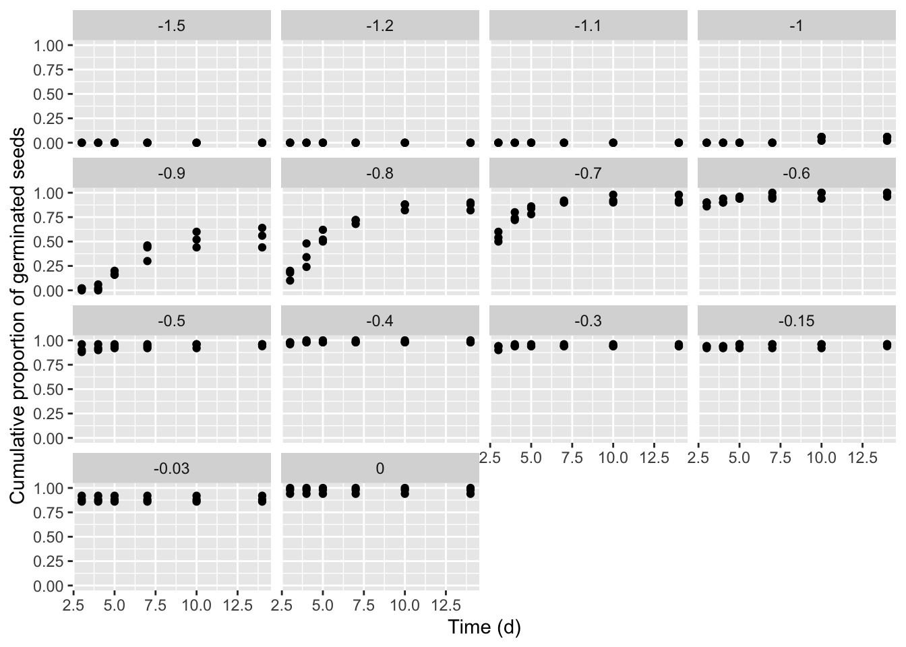
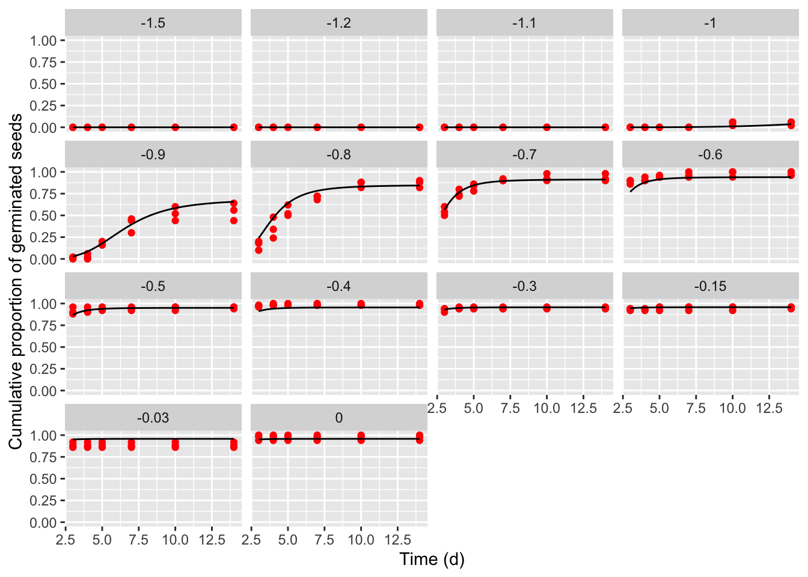

Section 6 Fitting time-to-event models with environmental covariates
We have seen that time-to-event curves (e.g., germination or emergence curves) can be used to describe the time course of germinations/emergences for a seed lot and we have also seen that the effects of experimental factors on seed germination can be accounted for by coding a different time-to-event curve for each factor level.
In some cases, we might be interested in considering environmental variables, that are, perhaps, the most important factors to trigger germination/emergence. For example, let’s consider either humidity content in the substrate, or temperature, or oxygen availability; it is clear that these variables play a fundamental role in determining germination extent and velocity and, therefore, they are very much studied by seed scientists. In principle, germination assays with environmental variables are straightforward to set up: several Petri dishes are submitted to different environmental conditions and germinations are inspected over time. What is the best method to analyse the resulting data and retrieve some important parameters, such as threshold temperatures (base, optimal or ceiling temperature) or base water potential?
It is important to anticipate that most environmental variables can be expressed on a quantitative scale; obviously when we make an experiment we are forced into selecting a subset of all possible, e.g., temperatures, such as 15, 20, 30°C, but that does not mean that we are not interested to what happens at, e.g., 18 or 22°C. From this point of view, quantitative variables are very different from qualitative variables, such as the different plant species that we have compared in previous sections of this tutorial.
In this post we will see an example of how we can account for the effects of water content in the substrate and include it in our time-to-event models. Of course, the same approach can be followed also with other types of environmental variables and, more generally, quantitative variables.
6.1 Hydro-time-to-event models
Let’s consider the following example: the germination of rapeseed (Brassica napus L. var. oleifera, cv. Excalibur) was tested at fourteen different water potential levels (0, -0.03, -0.15, -0.3, -0.4, -0.5, -0.6, -0.7, -0.8, -0.9, -1, -1.1, -1.2, -1.5 MPa), which were created by using a polyethylene glycol solution (PEG 6000). For each water potential level, three replicated Petri dishes with 50 seeds each were incubated at 20°C. Germinated seeds were counted every 2-3 days for 14 days and they were removed from the dishes after germination.
The dataset was published by Pace et al. (2012) and it is available as rape in the drcSeedGerm package, which needs to be installed from github (see below). Furthermore, the package drcte is necessary to fit time-to-event models and it should also be installed from gitHub. The following code loads the necessary packages, loads the dataset rape and shows the first six lines.
# library(devtools)
# install_github("OnofriAndreaPG/drcSeedGerm")
# install_github("OnofriAndreaPG/drcte")
library(drcSeedGerm)
library(drcte)
library(ggplot2)
data(rape)
head(rape)
## Psi Dish timeBef timeAf nSeeds nCum propCum
## 1 0 1 0 3 49 49 0.98
## 2 0 1 3 4 0 49 0.98
## 3 0 1 4 5 0 49 0.98
## 4 0 1 5 7 0 49 0.98
## 5 0 1 7 10 0 49 0.98
## 6 0 1 10 14 0 49 0.98In the above data.frame, ‘timeAf’ represents the moment when germinated seeds were counted, while ’timeBef’ represents the previous inspection time (or the beginning of the assay). The column ’nSeeds’ is the number of seeds that germinated during the time interval between ‘timeBef’ and ‘timeAf. The ’propCum’ column contains the cumulative proportions of germinated seeds and it is not necessary for time-to-event model fitting, although we can use it for plotting purposes.
ggplot(rape, aes(timeAf, propCum)) +
geom_point() +
facet_wrap(~Psi) +
scale_x_continuous(name = "Time (d)") +
scale_y_continuous(name = "Cumulative proportion of germinated seeds")
The germination time-course is strongly affected by the water potential in the substrate, as this determines the ability of seeds to absorb water and, consequently, trigger the germination and emergence processes. Therefore, our obvious interest is to understand how the environmental factor affects the time-course of germination.
We have shown that a parametric time-to-event curve is defined as a cumulative probability function (\(\Phi\)), with three parameters:
\[P(t) = \Phi \left( b, d, e \right)\] Considering our previous post, the most obvious extension of the above model is to allow for different \(b\), \(d\) and \(e\) value for each water potential level:
\[P(t, \Psi_i) = \Phi \left( b_i, d_i, e_i \right)\]
The first problem is that, for some water potential levels, germination did not occur and, for other levels, it occurred very quickly, so that no time-course of events could be observed (e.g., see the graph at 0 or -0.03 MPa). We say that we have ‘degenerated’ time-to-event curves.
If we fit those curves by using the ‘curveid’ argument, we are forced into fitting the same time-to-event model to all water potential levels (as shown in our previous post), and, therefore, the presence of degenerated curves provokes an error.
# Not run
# mod0 <- drmte(nSeeds ~ timeBef + timeAf, data = rape,
# curveid = Psi, fct = loglogistic())This problem can be circumvented by using the separate = TRUE argument; in this case, the different curves are fitted independent of one another and we are not tied to fitting the same model for all water potential levels. Errors are raised when trying to fit parametric time-to-event models, but they do not stop the execution in R.
mod1 <- drmte(nSeeds ~ timeBef + timeAf, data = rape,
curveid = Psi, fct = loglogistic(),
separate = TRUE)
## Error in optim(startVec, opfct, hessian = TRUE, method = optMethod, control = list(maxit = maxIt, :
## non-finite finite-difference value [3]
## Error in optim(startVec, opfct, hessian = TRUE, method = optMethod, control = list(maxit = maxIt, :
## non-finite value supplied by optim
## Error in optim(startVec, opfct, hessian = TRUE, method = optMethod, control = list(maxit = maxIt, :
## non-finite value supplied by optim
## Error in optim(startVec, opfct, hessian = TRUE, method = optMethod, control = list(maxit = maxIt, :
## non-finite value supplied by optim
coef(mod1)
## b:-1 d:-1 e:-1 b:-0.9 d:-0.9
## 6.439202e+01 4.666194e-02 8.364749e+00 5.832909e+00 5.501028e-01
## e:-0.9 b:-0.8 d:-0.8 e:-0.8 b:-0.7
## 5.870221e+00 3.732950e+00 8.788932e-01 4.471057e+00 3.599409e+00
## d:-0.7 e:-0.7 b:-0.6 d:-0.6 e:-0.6
## 9.359289e-01 2.730251e+00 -1.439224e+00 -2.343929e+03 7.160646e-01
## b:-0.5 d:-0.5 e:-0.5 b:-0.15 d:-0.15
## -6.019417e-01 -1.486343e+03 6.107110e-02 -5.594961e-01 -2.775981e+03
## e:-0.15
## 2.952136e-02In particular, for the cases where a time-course of events cannot be estimated, the drmte() function resorts to fitting a simpler model, where only the \(d\) parameter is estimated (that is the maximum fraction of germinated seeds). In the box above, we can see the estimated parameters but no standard errors, which can be obtained by using the summary() method, although there are some statistical issues that we will consider in a following post.
6.2 A better modelling approach
The previous approach is clearly sub-optimal. First of all, the different water potential levels are assumed as independent, with no ordering and distances. In other words, we have a time-to-event curve for, e.g. -0.9 MPa and -0.8 MPa, but we have no information about the time-to-event curve for any water potential levels in between. Furthermore, we have no estimates of some relevant hydro-time parameters, such as the base water potential, that is fundamental to predict the germination/emergence in field conditions.
In order to account for the very nature of the water potential variable, we could code a time-to-event model where the three parameters are continuous functions of \(\Psi\):
\[P(t, \Psi) = \Phi \left( b(\Psi), d(\Psi), e(\Psi) \right)\]
We followed such an approach in a relatively recent publication (Onofri et al., 2018) and we also spoke about this in a recent post. In detail, we considered a log-logistic cumulative distribution function:
\[P(t) = \frac{ d }{1 + \exp \left\{ b \left[ \log(t) - \log( e ) \right] \right\} }\]
where \(e\) is the median germination time, \(b\) is the slope at the inflection point and \(d\) is the maximum germinated proportion. Considering that the germination rate is the inverse of germination time, we replaced \(e = 1/GR_{50}\) and wrote the three parameters as functions of \(\Psi\):
\[P(t, \Psi) = \frac{ d(\Psi) }{1 + \exp \left\{ b(\Psi) \left[ \log(t) - \log(1 / \left[ GR_{50}(\Psi) \right] ) \right] \right\} }\]
where:
\[{\begin{array}{l} GR_{50}(\Psi) = \textrm{max} \left( \frac{\Psi - \Psi_{b}}{\theta_H}; 0 \right)\\ d(\Psi ) = \textrm{max} \left\{ G \, \left[ 1 - \exp \left( \frac{ \Psi - \Psi_b }{\sigma_{\Psi_b}} \right) \right]; 0 \right\}\\ b(\Psi) = b \end{array}}\]
The parameters are:
- \(\Psi_{b}\), that is the median base water potential in the seed lot (in MPa),
- \(\theta_H\), that is the hydro-time constant (in MPa day or MPa hour)
- \(\sigma_{\Psi_b}\), that represents the variability of \(\Psi_b\) within the population,
- \(G\), that is the germinable fraction, accounting for the fact that \(d\) may not reach 1, regardless of time and water potential.
- \(b\) (slope parameter) that is assumed to be constant and independent on \(\Psi\).
In the end, our hydro-time model is composed by four sub-models:
- a cumulative probability function (log-logistic, in our example), based on the three parameters \(d\), \(b\) and \(e = 1/GR50\);
- a sub-model expressing \(d\) as a function of \(\Psi\);
- a sub-model expressing \(GR50\) as a function of \(\Psi\);
- a sub-model expressing \(b\) as a function of \(\Psi\), although, this was indeed a simple identity model \(b(\Psi) = b\).
This hydro-time-to-event model was implemented in R as the HTE1() function, and it is available within the drcSeedGerm package, together with the appropriate self-starting routine. It can be fitted by using the drmte() function in the drcte package and the coef() function can be used to retrieve the parameter estimates.
modHTE <- drmte(nSeeds ~ timeBef + timeAf + Psi,
data = rape, fct = HTE1())
coef(modHTE)
## G:(Intercept) Psib:(Intercept) sigmaPsib:(Intercept)
## 0.9577918 -1.0397239 0.1108891
## thetaH:(Intercept) b:(Intercept)
## 0.9061385 4.0273963As we said before, we are also interested in standard errors for model parameters; we will address this issue in another post. It is important to note that this model gives us the ability of predicting germination at any water potential levels and it is not restrained to the values that we included in the experimental design. Furthermore, we have reliable estimates of \(\Psi_{b}\) and \(\theta_H\), which we can use for prediction purposes in field conditions.
6.3 Another modelling approach
Another type of hydro-time model was proposed by Bradford (2002) and later extended by Mesgaran et al., (2013). These authors, instead of modifying a traditional log-logistic distribution to include the environmental covariate, wrote a totally new cumulative distribution function, based on theoretical underpinnings relating to the distribution of base water potential within a seed population. Their model is:
\[ P(t, \Psi) = \Phi \left\{ \frac{\Psi - (\theta_H / t) -\Psi_b }{\sigma_{\Psi_b}} \right\}\]
where \(\Phi\) is a gaussian cumulative distribution function for base water potential. More information on how this model can be obtained from the original papers; it is, however, important to highlight that it is assumed that base water potential changes from seed to seeds within the population, according to a gaussian distribution function. The cumulative distribution function of event times is indirectly modelled, but it is not, in itself, gaussian (you see that \(t\) is at the denominator).
Mesgaran et al (2013) suggested that \(\Phi\) may not be gaussian and proposed several alternatives, so that, in all, we have six possible hydro-time-to-event models, which we have implemented within the drcSeedGerm package:
- gaussian (function
HTnorm()) - logistic (function
HTL()) - Gumbel (function
HTG()) - log-logistic (function
HTLL()) - Weibull (Type I) (function
HTW1()) - Weibull (Type II) (function
HTW2())
These equations are given at the end of this post. The code to fit those models is given below:
mod1 <- drmte(nSeeds ~ timeBef + timeAf + Psi,
data = rape, fct = HTnorm())
mod2 <- drmte(nSeeds ~ timeBef + timeAf + Psi,
data = rape, fct = HTL())
mod3 <- drmte(nSeeds ~ timeBef + timeAf + Psi,
data = rape, fct = HTG())
mod4 <- drmte(nSeeds ~ timeBef + timeAf + Psi,
data = rape, fct = HTLL())
mod5 <- drmte(nSeeds ~ timeBef + timeAf + Psi,
data = rape, fct = HTW1())
mod6 <- drmte(nSeeds ~ timeBef + timeAf + Psi,
data = rape, fct = HTW2())What is the best model for this dataset? Let’s use the Akaike’s Information Criterion (AIC: the lowest, the best) to decide; we see that modHTE was the best fitting one, followed by mod4.
AIC(mod1, mod2, mod3, mod4, mod5, mod6, modHTE)
## df AIC
## mod1 291 3516.914
## mod2 291 3300.824
## mod3 291 3097.775
## mod4 290 2886.608
## mod5 290 2889.306
## mod6 290 3009.023
## modHTE 289 2832.481It is important not to neglect a graphical inspection of model fit. The plot() method does not work with time-to-event curves with additional covariates (apart from time). However, we can retrieve the fitted data by using the plotData() function and use those predictions within the ggplot() function. The box below shows the appropriate coding.
library(ggplot2)
tab <- plotData(modHTE)
ggplot() +
geom_point(data = rape, mapping = aes(x = timeAf, y = propCum),
col = "red") +
geom_line(data = tab$plotFits, mapping = aes(x = timeAf, y = CDF)) +
facet_wrap(~ Psi) +
scale_x_continuous(name = "Time (d)") +
scale_y_continuous(name = "Cumulative proportion of germinated seeds")
## Warning: Removed 42 rows containing missing values (geom_point).
6.4 Further detail
Let us conclude this section by giving some detail on all other models in Mesgaran et al (2913; slightly reparameterised). In same cases \(\Psi_b\) has been replaced by \(\mu\), that is the location parameter of the cumulative distribution function of base water potential, but it is not the median value. On the other hand, \(\delta\) is the shifting parameter for all logarithm based distributions; indeed, logarithm based distribution are only defined for strictly positive variables, while we know that water potential usually assumes negative values. The shifting parameters is used to shift the cumulative distribution function to the right, so that negative values are allowed.
6.4.1 HTL()
\[ G(t, \Psi) = \frac{1}{1 + exp \left[ - \frac{ \Psi - \left( \theta _H/t \right) - \Psi_{b} } {\sigma} \right] }\]
6.4.2 HTG()
\[ G(t, \Psi) = \exp \left\{ { - \exp \left[ { - \left( {\frac{{\Psi - (\theta _H / t ) - \mu }}{\sigma }} \right)} \right]} \right\} \]
6.4.3 HTLL()
\[ G(t, \Psi) = \frac{1}{1 + \exp \left\{ \frac{ \log \left[ \Psi - \left( \frac{\theta _H}{t} \right) + \delta \right] - \log(\Psi_{b} + \delta) }{\sigma}\right\} }\]